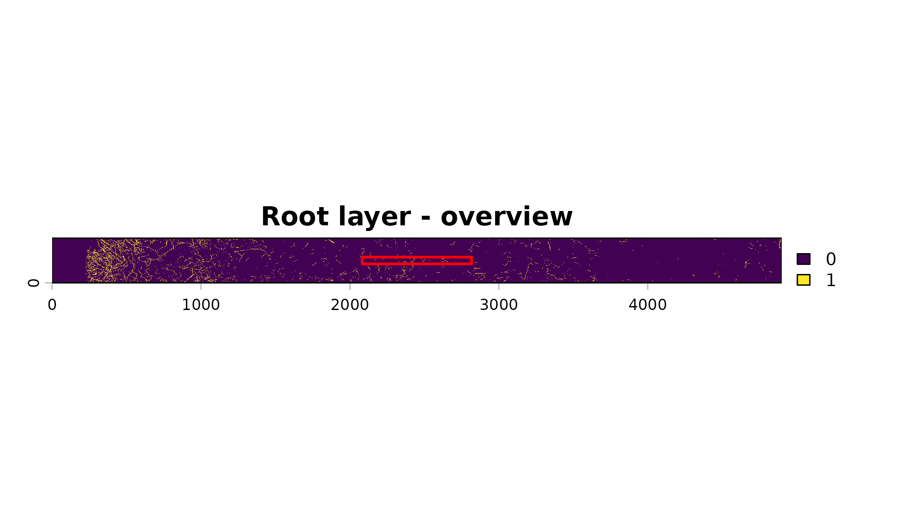
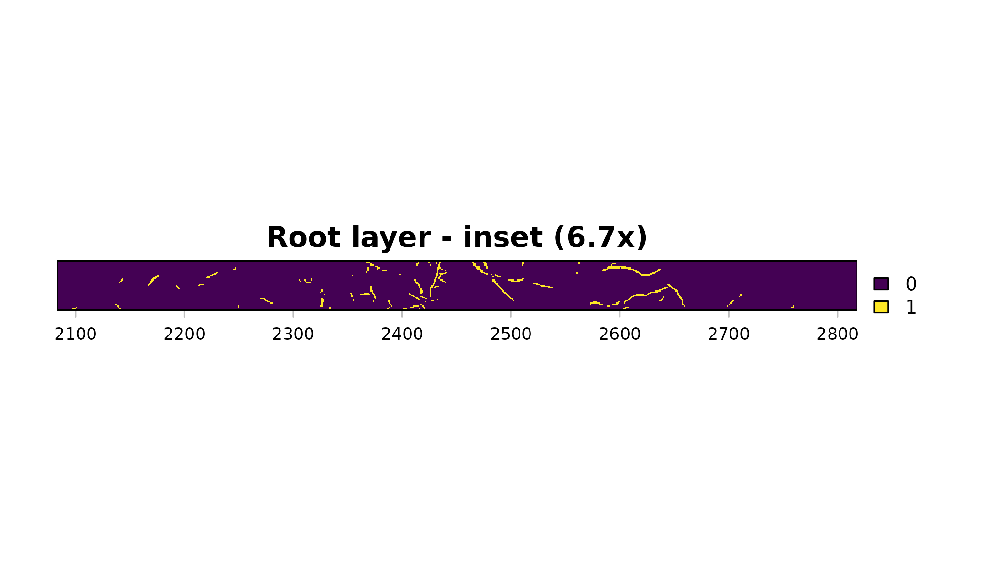
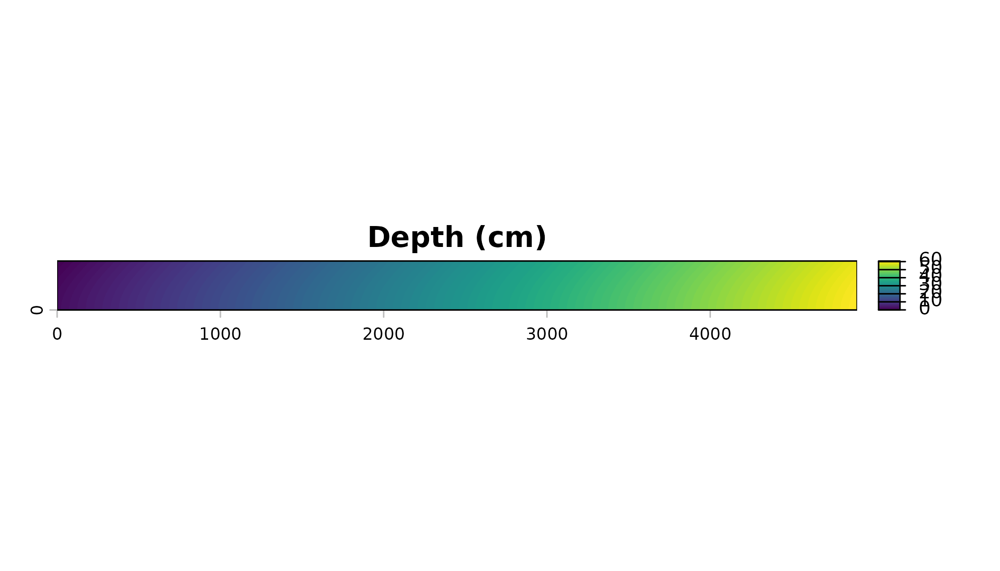
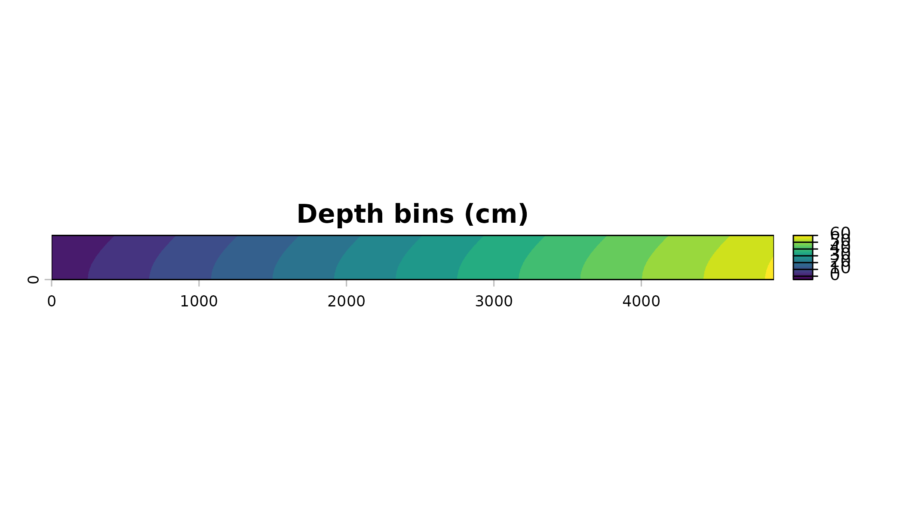
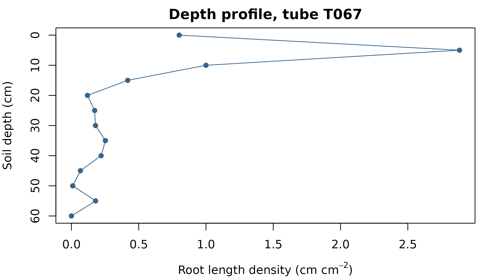

Rootopia in One Article: Purpose, Capabilities, and a Worked Depth Profile
Johannes Cunow
Source:vignettes/Rootopia_Overview_vignette.Rmd
Rootopia_Overview_vignette.RmdSummary
Rootopia turns segmented root images into root traits with a depth axis. It reads flatbed scans of washed roots and minirhizotron image sequences, cleans and thins the segmentation, and measures length, diameter, surface, branching architecture, network topology, turnover between sessions, and soil color and texture. For a minirhizotron tube it converts pixel position into soil depth from the tube’s diameter, insertion angle and scan resolution, so every trait can be reported per depth interval rather than per image. Segmentation itself is not part of the package: Rootopia starts from a mask produced by a trained model.
This article is the condensed reference. It states the purpose and scope, lists the capabilities in one table, draws the network of functions, and then runs one complete depth profile on the bundled example tube, stating the rule behind each step as it arrives. Capabilities outside that short path get a paragraph each and a pointer to the tutorial that develops them. The companion article How It Works gives the algorithms and the edge cases; this one gives the shape of the package.
Purpose and scope
Root traits are hard to measure because roots are buried. The two standard ways around that both produce images rather than numbers. A flatbed scanner images washed roots at high resolution under controlled light, which gives morphology but destroys the plant and loses the depth at which each root grew. A minirhizotron keeps the plant alive and keeps depth, by imaging the soil through the wall of a transparent tube, but returns the tube’s unrolled curved surface as a flat strip in which pixel position is not depth.
Segmentation of those images is now routine: trained models such as RootDetector and RootPainter separate root from soil well enough to be used as given. What is left undone is everything after the mask. Turning a mask into root length density per 5 cm interval, with a defensible depth axis and a diameter distribution, is still mostly done by hand or in one-off scripts, and the conventions those scripts use are rarely stated.
Rootopia covers that gap and only that gap. It takes a segmentation as its input and reports traits as its output, and every conversion in between is a documented rule rather than a default to be inferred. Three design choices follow from this scope, and they are worth stating because they also mark the boundaries:
-
It does not segment. No function here finds roots
in a raw scan.
image_threshold()exists for images where roots really are brighter than their surroundings – washed roots on a dark tray – and a brightness threshold cannot do more than that. Roots against soil need a trained model. - Depth is geometry, not an assumption. The depth map is built from measured quantities: tube diameter, insertion angle, resolution, and the position of the soil surface. Get one wrong and the whole profile shifts by a stated amount.
- Every trait names its input. Length is measured from a skeleton, diameter from a filled mask. Passing one where the other belongs gives a wrong number rather than an error, so the pairing is documented at each function.
Capabilities
One row per module. The entry point is the function to call; the rest of each module is reachable from its help page.
| Module | Question it answers | Entry point | Returns |
|---|---|---|---|
| Image input | Get any format into one representation | load_flexible_image() |
raster, array, matrix or cimg
|
| Cleaning | Remove specks, fill pinholes |
clean_image(),
report_image_components()
|
cleaned mask; component sizes |
| Thresholding | Binarize a grayscale image | image_threshold() |
binary mask |
| Skeletonization | Reduce roots to center lines |
skeletonize_image(), prune_skeleton()
|
1-px skeleton |
| Size traits | How much, how long, how thick |
count_pixels(), root_length(),
root_diameter()
|
counts; cm; diameter raster |
| Spatial pattern | How is root material arranged | root_scape_metrics() |
landscape metrics table |
| Branching order | Which roots are axes, which laterals |
branch_order_map(), order_metrics()
|
segment table, per-order summary, class map |
| Network and transport | Shape of the network; what each segment carries |
network_metrics(), root_transport()
|
traits and QC lists; per-segment columns |
| Depth mapping | What depth is this pixel at |
create_depthmap(), binning(),
depth_zoning()
|
depth raster; bins; masked slice |
| Soil surface | Where is depth zero | estimate_soil_surface() |
pixel position of the soil line |
| Root angle | Do roots dive or spread | deep_drive() |
one fraction in [0, 1] |
| Distribution indices | Where is the root mass |
MRD(), root_accumulation(),
compare_depth_distribution(),
modal_peaks()
|
numeric summaries |
| Rotation bias | Did the tube turn between sessions |
estimate_rotation_center(),
estimate_rotation_shift(),
rotation_censor()
|
pixel offsets; cropped raster |
| Circumferential pattern | Are roots on one side of the tube |
slice_rotation(), rhythmicity(),
fit_sine_curve()
|
slices; amplitude, phase, p-value |
| Turnover | What was produced, what died | root_turnover() |
standing, production, decay, ratios |
| Soil color and texture | What is each pixel made of |
classify_soil_rgb(), tube_coloration(),
analyze_soil_texture()
|
class map and statistics; color summary; GLCM rasters |
| Rhizosphere zone | A buffer around every root | create_root_buffer() |
halo mask |
| Stitching | Join overlapping frames of one tube | stitch_root_scans() |
one mosaic per tube, plus a join report |
| Batch | All of the above over a folder | root_depth_metrics() |
one row per image x depth bin |
The workflow network
Most analyses run left to right. You can enter anywhere and stop anywhere.
stitch_root_scans()
|
v
load_flexible_image() -> image_threshold() -> clean_image()
|
rotation_censor()
|
+---------------------------------+------------------+
| |
v v
skeletonize_image() root_diameter()
| root_scape_metrics()
+--------------+--------------+ count_pixels()
| | |
v v v
root_length() detect_skeleton branch_order_map()
_points() |
+------+------+
| |
v v
network_metrics() root_transport()
create_depthmap() -> binning() -> depth_zoning() -> any trait, per bin
| |
v v
deep_drive() MRD(), root_accumulation(),
compare_depth_distribution()Turnover and the soil-color module sit off this chain.
root_turnover() needs two images or one multi-layer image,
not a skeleton; classify_soil_rgb() and
analyze_soil_texture() read color channels, not root
shape.
Four invariants hold across the whole network, and they explain most surprising numbers:
Mask or skeleton. root_length(),
detect_skeleton_points() and the graph in
branch_order_map() read a skeleton.
root_diameter(), count_pixels() and the
mask = argument of the branching functions read the filled
mask. Diameter comes from the distance transform of a solid shape, so a
skeleton passed as a mask yields diameters of about one pixel everywhere
– and every diameter-dependent rule downstream degrades with them.
Image or vector. Everything up to and including
depth_zoning() works on rasters. The distribution indices
work on the numeric profile you have already built, so they come
last.
One pass or one slice. A trait that reduces to a
per-zone sum or mean (pixel counts, mean diameter) goes through
terra::zonal() in one call. A trait whose function needs a
whole image (root length, landscape metrics, color) goes through
depth_zoning() one bin at a time, in a loop.
Grids must match. terra::zonal() and
depth_zoning() both require a shared extent and resolution.
create_depthmap() returns its map on the input’s grid, so
that pairing is aligned by construction. Several functions rebuild their
output raster from an array instead, root_diameter() among
them, which sets the extent to 0..ncol, 0..nrow rather than
inheriting it – so a workflow on a cropped window has to snap those
rasters back with terra::ext()<- before any zonal
call.
A worked depth profile
One minirhizotron tube, from the bundled segmentation to a root length density profile and a mean rooting depth. The rules are stated as they come up.
The bundled scan is 4900 x 1144 px. Thinning is a per-pixel operation over repeated passes, so this article crops the rotation axis to 300 rows to keep the build quick. The depth axis is kept whole, because that is the axis the profile is built on. Nothing about the workflow changes with the crop; only its runtime does.
dpi <- 150 # the scan resolution; every cm value below depends on it
data(seg_Oulanka2023_Session01_T067)
# Three-band RootDetector output. Layer 2 is the root channel; scale = "binary"
# maps it to 0/1 so pixel sums are root counts.
root_layer <- load_flexible_image(seg_Oulanka2023_Session01_T067,
output_format = "spatrast",
scale = "binary",
select_layer = 2)
# Crop the rotation axis (rows) and keep the depth axis (columns) whole.
e <- terra::ext(root_layer)
yres <- terra::res(root_layer)[2]
root_layer <- terra::crop(root_layer,
terra::ext(e[1], e[2], e[3], e[3] + 300 * yres))
dim(root_layer)
#> [1] 300 4900 1
zoom_plot(root_layer, main = "Root layer", frac = 0.15)

Rule 1 – the depth axis runs along the image width. Rootopia expects a scan rotated so that depth increases along columns and the tube circumference runs down the rows. A scan with the soil surface at the top needs a quarter turn before anything else. Nothing errors if it is the wrong way round; the depth map is simply built along the wrong axis.
Clean the mask
# Look at the actual component sizes before choosing a threshold.
sizes <- report_image_components(root_layer, plot = FALSE)
#> === Enclosed holes (background 0 surrounded by root 1) ===
#> n = 3539 | min = 1 | median = 3 | mean = 16.0 | max = 7941 (px)
#>
#> === Root components (connected root-1 regions) ===
#> n = 3611 | min = 1 | median = 3 | mean = 21.2 | max = 7941 (px)
stats::quantile(sizes$objects)
#> 0% 25% 50% 75% 100%
#> 1 1 3 9 7941
cleaned <- clean_image(root_layer,
fill_holes_upto = 20, # largest gap that gets filled
drop_objects_upto = 20, # largest speck that gets deleted
protect_border = FALSE)Rule 2 – a hole is not a gap, and both thresholds are upper
limits. A background region is filled only if it is fully
enclosed; one that touches the image border is the outside world and is
never filled, at any size. Anything larger than either threshold is left
alone. Sizes are pixel counts by default; size_unit = "mm2"
with a dpi makes them physical areas instead, which is what
you want when scans of different resolution are analyzed together.
Skeletonize, and prune the spurs
skl <- skeletonize_image(cleaned, verbose = FALSE)
# Terminal stubs left by thinning inflate tip counts and length.
skl <- prune_skeleton(skl, mask = cleaned, min_length = 20, iter = 1)Rule 3 – thinning keeps every tip, but it moves each one inward. The lookup table that drives thinning deletes no pixel with a single neighbor, so a root tip is never deleted and a root is never cut off at its end. The surviving tip does sit about one root radius short of the mask’s tip, because the radius around it is what gets thinned away. That bias is the reason the package’s own validation allows more length error from a filled mask than from an exact center line.
Build the depth map
depth_map <- create_depthmap(
img = cleaned,
geometry = "tube", # "window" for a flat panel, "flat" for no depth axis
tube_thicc = 7, # inner tube diameter, cm -- measure your own
angle_from_vertical = 45, # degrees from VERTICAL; 0 is an upright tube
dpi = dpi,
start_soil = 2.9, # cm; shifts depth zero to the soil surface
center_offset = 0.5 # tube top halfway down the image height
)
terra::plot(depth_map, main = "Depth (cm)")
Rule 4 – the angle is measured from vertical, and
geometry says what was imaged.
angle_from_vertical = 0 is an upright tube, 90
a horizontal one, so the number is how far the tube leans over – the
convention field notes record. Both ends of [0, 90] are
valid.
The angle splits a tube’s depth between its two axes, and the two
terms are complements. Depth along the tube’s length scales by
cos(angle_from_vertical): upright gains a full centimeter
of depth per centimeter of tube, horizontal gains none. Depth spread
around the circumference scales by
sin(angle_from_vertical): an upright tube’s cross-section
is horizontal, so its whole circumference sits at one depth, while a
horizontal tube’s upper side is a full diameter above its lower
side.
geometry then decides which corrections apply:
"tube" adds the curvature wave and the angle scaling,
"window" keeps the angle scaling for a planar rhizotron
panel, and "flat" drops both so that every pixel of a tray
scan shares one depth. Only "flat" removes the depth axis
itself.
How It Works plots the two
terms against the angle over the whole range, measured off
create_depthmap() rather than drawn from the formula – the
clearest way to see what the angle does to a depth map.
Rule 5 – start_soil is centimeters, and it only
shifts the origin. It is subtracted from every depth, so an
error in it moves the entire profile by that amount and changes nothing
else. In-situ calibration – marking the tube at installation – is the
reliable source. estimate_soil_surface() finds the end of
the tape instead, and reports a pixel position along
the depth axis, so convert with cm = px * 2.54 / dpi before
passing it here.
Rule 6 – curvature is a wave across the rows, and the image
must fit inside one turn. With geometry = "tube" a
cosine spanning one full circumference is added across the image height:
pixels imaged from the upper side of the tube are nearer the surface
than those from the lower side. Its crest-to-trough range is the tilted
tube diameter. center_offset rotates the wave to where the
top of your tube sits, as a fraction of one circumference. If the image
is taller than one circumference the wave cannot cover it, and the
function stops with Wrong Tube Diameter – which means
tube_thicc or dpi is wrong, not the image.
Bin the depths
depth_bins <- binning(depth_map, nn = 5, round_option = "floor")
depths <- sort(unique(terra::values(depth_bins, mat = FALSE)))
depths <- depths[!is.na(depths) & depths >= 0]
depths
#> [1] 0 5 10 15 20 25 30 35 40 45 50 55 60
terra::plot(depth_bins, main = "Depth bins (cm)")
Rule 7 – round_option decides what a bin label
means. "floor" gives the soil-science convention:
the bin labeled 5 spans 5-10 cm, and every bin is the full
nn wide. The default, "rounding", labels a bin
by its center, so the bin labeled 0 spans -2.5 to +2.5 cm and is half as
wide as the rest once negative depths are dropped. Per-bin densities are
unaffected either way, because they divide by each bin’s own measured
area, but any total that multiplies a per-bin value by nn
is biased by that half-width bin.
Per-bin traits: the two patterns
Pixel counts reduce to a per-zone sum, so the whole profile comes out of one call.
root_px <- terra::zonal(cleaned, depth_bins, "sum", na.rm = TRUE)
void_px <- terra::zonal(abs(cleaned - 1), depth_bins, "sum", na.rm = TRUE)
names(root_px) <- c("depth", "rootpx")
names(void_px) <- c("depth", "voidpx")
profile <- merge(root_px, void_px, by = "depth")
profile <- profile[profile$depth >= 0, ]
# Imaged tube wall per bin, in cm^2
profile$area_cm2 <- (profile$rootpx + profile$voidpx) * (2.54 / dpi)^2
profile$rootpx.density <- profile$rootpx / (profile$rootpx + profile$voidpx) * 100
head(profile)
#> depth rootpx voidpx area_cm2 rootpx.density
#> 2 0 3870 89383 26.73916 4.1500005
#> 3 5 16599 108676 35.92108 13.2500499
#> 4 10 6128 119155 35.92337 4.8913260
#> 5 15 2426 122839 35.91821 1.9366942
#> 6 20 1086 124187 35.92050 0.8669067
#> 7 25 1218 124055 35.92050 0.9722765Root length does not: Kimura’s estimator needs a whole skeleton, so the trait is computed one bin at a time and the single-bin call is wrapped in a loop.
len <- do.call(rbind, lapply(depths, function(d) {
slice <- depth_zoning(skl, depth_map = depth_bins, depth = d)
data.frame(depth = d,
rootlength = root_length(slice, unit = "cm", dpi = dpi,
show_messages = FALSE))
}))
profile <- merge(profile, len, by = "depth")
profile$rootlength.density <- profile$rootlength / profile$area_cm2
head(profile)
#> depth rootpx voidpx area_cm2 rootpx.density rootlength rootlength.density
#> 1 0 3870 89383 26.73916 4.1500005 21.423595 0.8012068
#> 2 5 16599 108676 35.92108 13.2500499 103.599724 2.8840931
#> 3 10 6128 119155 35.92337 4.8913260 35.914279 0.9997470
#> 4 15 2426 122839 35.91821 1.9366942 15.033907 0.4185595
#> 5 20 1086 124187 35.92050 0.8669067 4.284088 0.1192658
#> 6 25 1218 124055 35.92050 0.9722765 6.201683 0.1726502Rule 8 – the Kimura estimators are not additive.
Length is estimated from counts of orthogonal and diagonal skeleton
steps, and sqrt(Nd^2 + (Nd + No/2)^2) + No/2 is not a sum
over subsets. The depth bins therefore do not add up to the whole-image
value. That is correct behavior for a non-linear estimator, not a leak;
root_depth_metrics() sidesteps it internally by using a
per-pixel Freeman length map for the profile.
Diameter is a per-pixel value, so it reduces with
zonal() like the counts – after its raster is snapped back
onto the depth grid.
diam <- root_diameter(cleaned,
skeleton_img = skl,
unit = "cm",
dpi = dpi, # not optional: the default is 300
select_layer = NULL)
# root_diameter() rebuilds its rasters from an array, so their extent comes out
# as 0..ncol, 0..nrow rather than inherited. Carry the depth grid over before
# the zonal call; it costs nothing when the two already agree.
terra::ext(diam$diameter_rast) <- terra::ext(depth_bins)
dm <- terra::zonal(diam$diameter_rast, depth_bins, "mean", na.rm = TRUE)
names(dm) <- c("depth", "avg.diameter")
profile <- merge(profile, dm, by = "depth")
head(profile)
#> depth rootpx voidpx area_cm2 rootpx.density rootlength rootlength.density
#> 1 0 3870 89383 26.73916 4.1500005 21.423595 0.8012068
#> 2 5 16599 108676 35.92108 13.2500499 103.599724 2.8840931
#> 3 10 6128 119155 35.92337 4.8913260 35.914279 0.9997470
#> 4 15 2426 122839 35.91821 1.9366942 15.033907 0.4185595
#> 5 20 1086 124187 35.92050 0.8669067 4.284088 0.1192658
#> 6 25 1218 124055 35.92050 0.9722765 6.201683 0.1726502
#> avg.diameter
#> 1 0.04220918
#> 2 0.04073139
#> 3 0.03707690
#> 4 0.03548814
#> 5 0.04159207
#> 6 0.03690674Rule 9 – diameter is twice a distance transform, and
dpi is not optional. Each root pixel carries its
distance to the nearest background pixel, which is the radius of the
largest circle that fits inside the root there; diameter is twice that.
unit = "cm" without a matching dpi does not
error, because dpi defaults to 300 – so a 150 dpi scan
measured with the default comes back twice as thick. Pass it explicitly
every time.
Profile summaries
ok <- profile[!is.na(profile$rootlength.density) &
profile$rootlength.density > 0, ]
mrd <- MRD(w = ok$depth, roots = ok$rootlength.density)
profile$Tube <- "T067"
profile$cumulative <- root_accumulation(profile,
group = "Tube",
depth = "depth",
variable = "rootlength",
stdrz = "additive")
cat(sprintf("Mean rooting depth: %.1f cm\n", mrd))
#> Mean rooting depth: 11.7 cm
head(profile[, c("depth", "rootlength.density", "avg.diameter", "cumulative")])
#> depth rootlength.density avg.diameter cumulative
#> 1 0 0.8012068 0.04220918 0.09795924
#> 2 5 2.8840931 0.04073139 0.57166824
#> 3 10 0.9997470 0.03707690 0.73588603
#> 4 15 0.4185595 0.03548814 0.80462846
#> 5 20 0.1192658 0.04159207 0.82421742
#> 6 25 0.1726502 0.03690674 0.85257457Rule 10 – MRD() refuses incomplete
input. It stops on NA, on negative root values,
and on an all-zero profile, rather than returning a number built from
part of the data. Filter the profile first, as above, and the filtering
stays visible in your script instead of hiding inside the function.
Rule 11 – stdrz picks the denominator, and only
one option ends at 1. "counts" returns the raw
cumulative sum. "additive" divides it by its own maximum,
so each group’s curve ends at 1 and curves from tubes with very
different total root abundance can be compared by shape alone.
"relative" divides by the sum of the cumulative values,
which is a different scale and does not end at 1.
op <- graphics::par(mar = c(4, 4, 2, 1))
plot(profile$rootlength.density, profile$depth,
type = "o", pch = 16, col = "steelblue4",
ylim = rev(range(profile$depth)),
xlab = expression("Root length density (cm cm"^-2*")"),
ylab = "Soil depth (cm)",
main = "Depth profile, tube T067")
graphics::par(op)The same profile in one call
Once the thresholds are settled, root_depth_metrics()
runs these steps over a directory and returns one row per image and
depth bin, with per-image fault tolerance and a progress line that
reports elapsed and remaining time.
result <- root_depth_metrics(
path_seg = "scans/segmented/2022_02/",
tube_names = ids, # one unique id per file
dpi = 150,
insertion_angles = 45, # degrees from vertical
tube_diameter_cm = 7,
soil_starts = 2.9,
depth_interval_cm = 5,
bin_round = "floor",
session = "2022_02"
)Supplying insertion_angles or
tube_diameter_cm selects minirhizotron geometry; supplying
neither selects flatbed. geometry = "flat" states the
no-depth case directly, which is clearer than reaching it through
depth_interval_cm = NULL, and
geometry = "window" covers a planar rhizotron panel that
does have a depth axis. Branching order, root angle, color and landscape
metrics are separate calc_* switches, all off by default
because each costs real time. See the Batch Processing article for
which of the arguments matter for which geometry.
Beyond the short path
Each of these is a module the profile above does not touch.
Branching order. branch_order_map()
converts a skeleton into segments and nodes and labels every segment
under four schemes at once: order_from_tip and
strahler_order count inward from the tips, per segment;
root_max_order_from_tip and order_from_base
describe a whole continuous root. order = chooses which one
the summary and the class map report, and all four stay in
$edges. The schemes matter because root ecology uses the
word “order” in both directions – Freschet et al. (2021) set
out three classifications that disagree about which end is first – so a
number is ambiguous unless the scheme is named.
order_metrics() then pools orders into named groups, or
picks the thinnest or thickest class by its length-weighted diameter so
that one call means the same thing across a dataset. Worked example: Flatbed Scans.
Network topology and transport.
network_metrics() summarizes the segment graph –
components, tips, branch points, and the connectivity coefficients – and
makes you declare the topology, because a loop in a root scan is almost
always two roots crossing in projection rather than biology. Under
"tree" or "projected_tree" the loop counts
land in $qc as a segmentation quality measure; under
"reticulate", for mycelium or leaf venation, they land in
$traits as a result. root_transport() roots
each component at its thickest loose end and measures outward, giving
path length, path resistance, and how much root lies beyond each
segment.
Rotation bias. A tube can turn between sessions, and
a scanner does not cover a full circle, so roots near the edge of the
scan appear in one session and not the next.
estimate_rotation_center() locates the tube top from tape
coverage, estimate_rotation_shift() measures the offset
between two sessions by phase or cross correlation, and
rotation_censor() crops every session to a common window.
slice_rotation() then cuts the circumference into bands,
and feeding a per-band trait to rhythmicity() tests whether
roots favor one side of the tube – a spatial use of a tool normally
introduced for time series. See Rotation Bias.
Turnover. root_turnover(method = "tc")
compares two sessions and reports net change: standing root at each time
point, production as the difference, and new root as a percentage.
method = "dpc" decomposes a single multi-layer image in
which a segmentation tool has already coded each pixel as produced,
decayed or unchanged, which resolves gross change instead of net. The
two answer different questions: root that grew and died between two
scans is invisible to the first and visible to the second.
Soil color and texture.
classify_soil_rgb() assigns each pixel to a material class
by nearest centroid in CIE LAB, leaving pixels beyond every class’s
distance limit unclassified rather than forcing them into the nearest
class. The shipped centroids were calibrated on one scanner at one site,
so build_soil_centroids() derives your own from color
picks. analyze_soil_texture() adds GLCM texture,
tube_coloration() a whole-image color summary, and
create_root_buffer() a rhizosphere halo around every root.
See Special Topics.
Stitching. A tube is often imaged as several
overlapping frames. stitch_root_scans() groups files into
tubes by a pattern in the filename, aligns consecutive frames by FFT
phase correlation over a band along the overlapping edge, and blends
them into one mosaic per tube, so a root crossing a frame boundary is
measured once. Its report carries a correlation peak per join; sort by
it to find the weak ones. See Image
Stitching.
Units and conventions
The table a reader needs in order to reproduce a number.
| Quantity | Convention |
|---|---|
| Pixel to physical |
inch = px / dpi; cm = px * 2.54 / dpi
|
angle_from_vertical, insertion_angles
|
Degrees from vertical, in [0, 90]. 0 is an upright tube, 90 a horizontal one |
geometry |
"tube" (curvature + angle), "window"
(angle only), "flat" (neither, one depth) |
| Depth axis | Image width (columns), increasing with depth |
| Circumference axis | Image height (rows) |
start_soil, soil_starts
|
Centimeters, subtracted from every depth |
estimate_soil_surface()$soil0 |
Pixels along the depth axis |
center_offset (depth map) |
Fraction of one circumference, in [0, 1] |
center_offset (rotation_censor()) |
Fraction of image height in [0, 1], or an absolute row above 1 |
| Diameter |
2 x distance transform of the filled mask |
| Default length estimator |
kimura2, which is not additive over subsets |
mask = in create_depthmap()
|
A cell is excluded only where the mask is exactly
1
|
Disabled calc_* groups |
Produce NA columns, not absent columns |
Two conventions are easy to misread. Diameter in the order summaries
is length-weighted, so mean_diameter
describes the diameter of the root length rather than the average of
segment values; and branching_frequency is per unit length
rather than per segment, so it is comparable between groups holding very
different amounts of root.
How the numbers are checked
A wrong length on a real scan looks exactly like a right one, so the
branching and length machinery is scored against synthetic images whose
geometry is prescribed rather than measured. Five designs stress
different failure modes: laterals on one axis, 45-degree laterals, three
generations of nested branching, two roots crossing without touching,
and a symmetric fork. Each is scored twice. Feeding the exact one-pixel
center line isolates the graph – tracing, junction handling, crossing
resolution, ordering, length integration – and allows 3% on length.
Feeding the filled image instead also carries the thinning error,
chiefly the erosion of about one root radius at every tip, and allows
6%. Tip, branch-point and root counts must be exact. Diameters allow
10%, scored against the package’s own 2 x
distance-transform convention rather than against a formula.
The thinning lookup table is audited separately, by assertion rather than by example: no entry deletes a pixel whose removal would disconnect its own neighborhood, and no pixel with a single neighbor is ever deleted. Both are checked over all 256 neighborhood codes.
devtools::test() runs all of it. A change that moves a
branching number fails a test rather than landing quietly in your
results.
Known limits
Stated plainly, because a reviewer will ask.
-
Segmentation quality sets the ceiling. Every trait
is a property of the mask. Rootopia neither improves a poor segmentation
nor reports how good one is, beyond the crossing counts
network_metrics()returns as quality control. -
A scan is a projection. Two roots crossing in front
of one another touch in the image. The crossing-resolution step inside
branch_order_map()separates four-armed nodes when both candidate through-roots are straight enough, but a thick axis crossed by a thin root and a thick axis with two opposed thin laterals are the same shape in outline, and no threshold gets both right. - Inner and outer tube diameters differ, so observed root length slightly underestimates true length in soil. No function here corrects for that; apply a resize coefficient yourself if you need it.
-
order_from_basepicks its order-1 axis by thickness, not by knowing which root germinated first. It reproduces the direction of developmental counting without reconstructing development. -
path_resistancemodels a root as an open pipe. The fourth-power radius term ranks segments sensibly but is not a physical measurement; a real root’s resistance is set by its internal plumbing. -
deep_drive()scores agreement, not deviation. A pixel heading 45 degrees from optimal counts the same as one heading 180 degrees away. -
Brightness thresholding cannot separate root from soil of
the same brightness. On the bundled minirhizotron scan no value
of
adaptive_kworks, which is a property of the image rather than of the implementation.
Where to go next
- How It Works – the algorithms, the decision rules, and an edge-case table per module.
- Minirhizotron Scans and Flatbed Scans – the step-by-step tutorials.
- Batch Processing – the whole profile over a folder, and which arguments matter for which geometry.
- Function reference – every exported function.
References
Freschet GT, Pagès L, Iversen CM, et al. (2021) A starting guide to root ecology: strengthening ecological concepts and standardizing root classification, sampling, processing and trait measurements. New Phytologist 232: 973-1122.
Kimura K, Kikuchi S, Yamasaki S (1999) Accurate root length measurement by image analysis. Plant and Soil 216: 117-127.
Peters B, Blume-Werry G, Gillert A, et al. (2023) RootDetector: a convolutional neural network for root detection. Scientific Reports 13: 1399.
Zhang TY, Suen CY (1984) A fast parallel algorithm for thinning digital patterns. Communications of the ACM 27: 236-239.